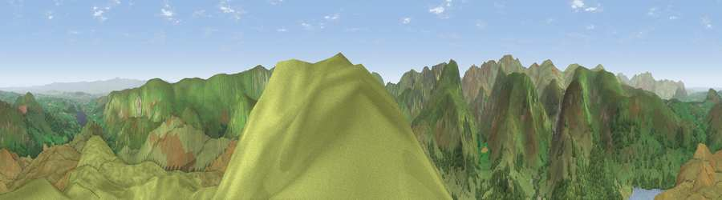

Viewpoint near Patterdale
#2747 in England · top 18% of its area beats it · near PatterdaleThe view, rendered

A 360° render of this exact spot computed from the terrain model, tree cover and land cover — summer colours, afternoon light, calibrated against photographs of famous viewpoints. Real trees, hedges and buildings will differ in detail.
The panorama
Grey silhouette: terrain skyline in each direction (720 bearings, Earth curvature and refraction included). Dashed green: skyline with trees (+15 m) and buildings (+8 m) as obstacles. Blue strip: how far the ground is visible on each bearing.
Where the view opens
Wedge length = distance to the farthest visible ground on that bearing (vegetation-aware). Rings at 10, 25 and 50 km.
What fills the view
85% grassland · 13% woodland ·
Angular shares of the visible panorama (visual magnitude), not map area. Landscape diversity 0.21 (0–1 Shannon).
Key numbers
More beautiful places nearby
The staircase of upgrades: each row has a higher view potential than everything closer. Driving times are estimates from straight-line distance, calibrated against real road routing — check an actual route before setting out.
| Place | Direction | Drive | Score |
|---|---|---|---|
| Birk Fell | NNW · 1 km | ~4 min | 75.5 |
| Viewpoint near Glenridding | NW · 4 km | ~8 min | 75.8 |
| Viewpoint near Dockray | NW · 4 km | ~9 min | 76.4 |
| Common Fell | NNW · 4 km | ~9 min | 76.7 |
| Red Crag | ESE · 5 km | ~11 min | 78.4 |
| High Raise | SE · 6 km | ~12 min | 79.4 |
| Viewpoint near Watermillock | ENE · 6 km | ~12 min | 80.1 |
| Raise | W · 6 km | ~13 min | 81.5 |
54.54520, -2.92088 · source: screening · position refined by local search. Computed location — check access rights before visiting.